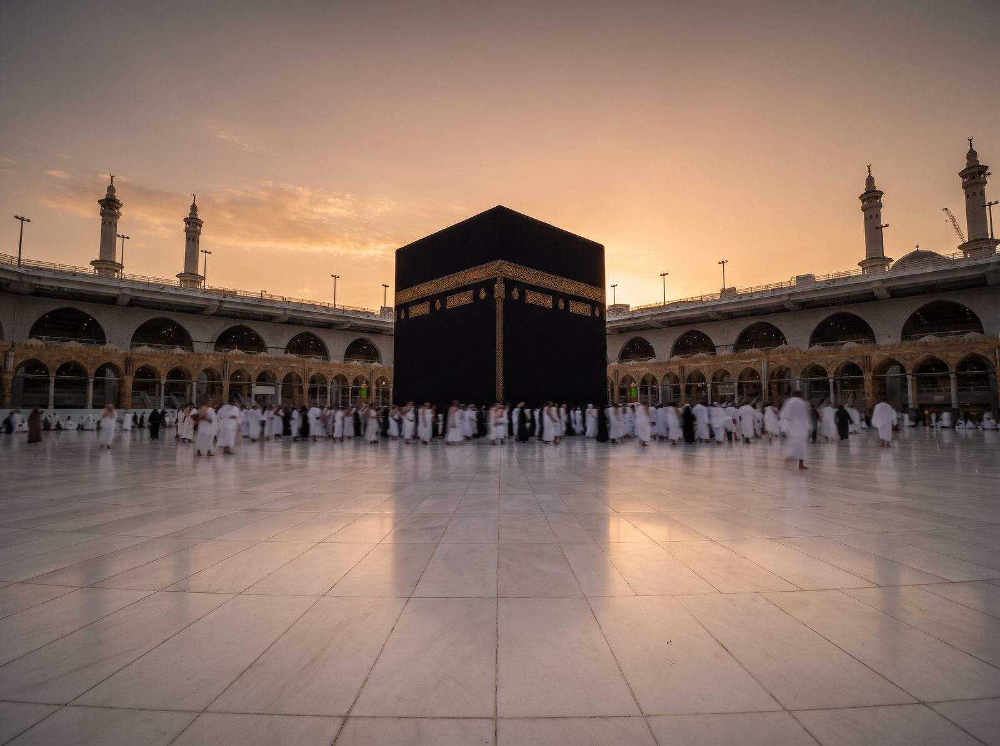

Islamic tools · AKN Trust
Qibla Direction
The bearing to the Kaaba from your city or your exact location — with a live device compass on phones that support it.
Your location
Compass
Qibla is — from North
On a phone with a compass, the needle can follow your heading — turn until it points straight up and you are facing the qibla.

Wherever on earth you stand, turn towards the Kaaba with calm and reverence — it is the single direction that unites every worshipper in salah.
One direction — one ummah
Face the qibla, then face the need
Your zakat and sadaqah become ration, clean water, education and healthcare for the deserving across Pakistan.